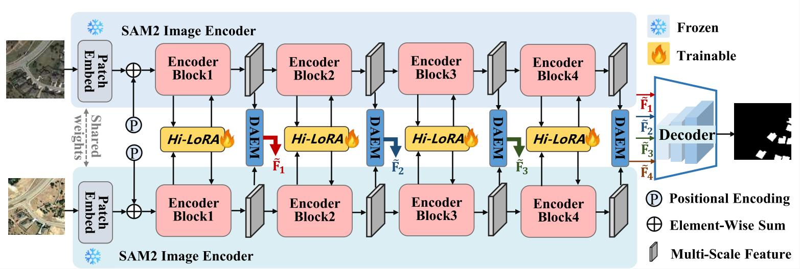
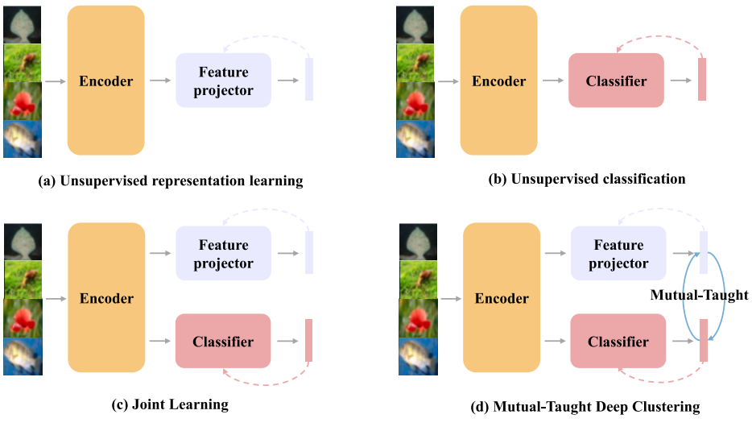
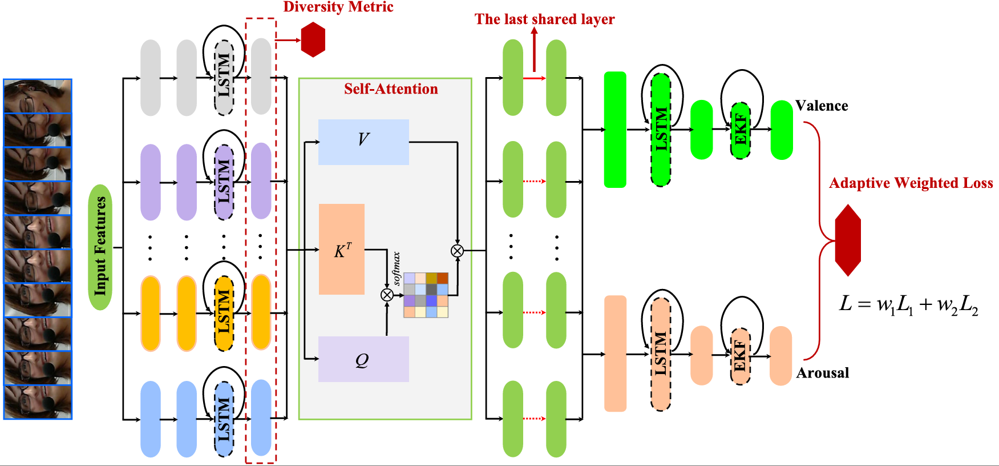
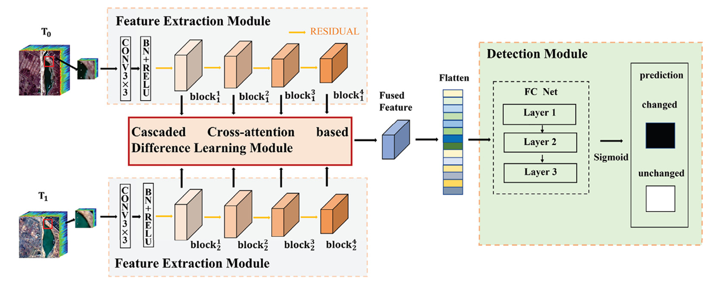
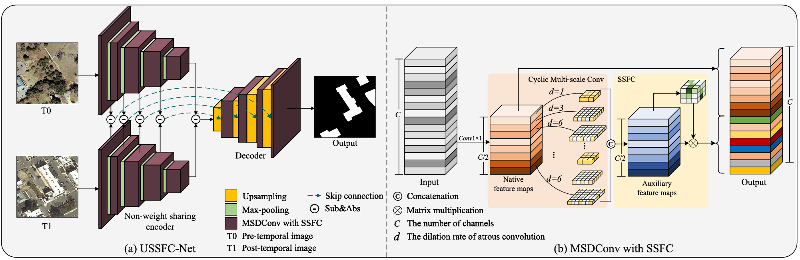
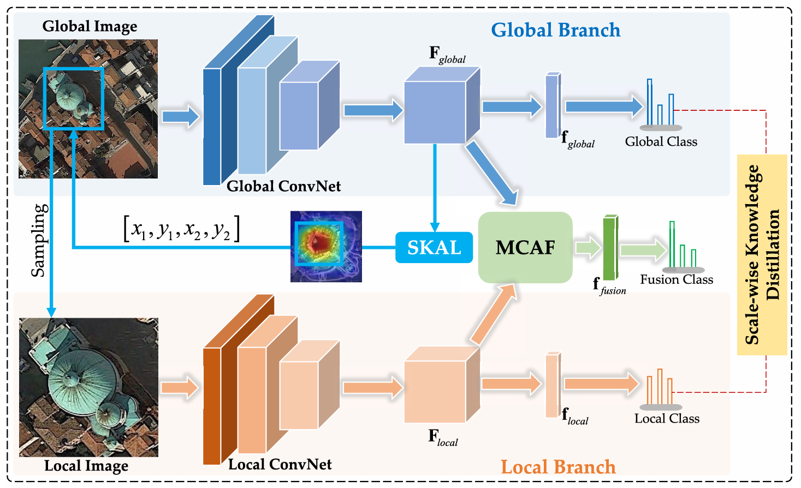

|  |
DA2-Net: Integrating SAM2 With Domain Adaption and Difference Aggregation for Remote Sensing Change Detection
Hailong Ning, Qi He, Tao Lei*, Xiaopeng Cao, Wuxia Zhang, Yanping Chen, and Asoke K Nandi
IEEE Transactions on Geoscience and Remote Sensing (TGRS), 2025. (SCI一区TOP期刊)
[Paper]
[Code]
|
| |
Classifier ensemble based source-free domain adaptation for time series classification
Ercheng Pei, Wangdong Zhao, Zhanxuan Hu*, Lang He, Hailong Ning, Haifeng Chen
Knowledge-Based Systems (KBS), 2023. (SCI一区TOP期刊)
[Paper]
[Code]
|
|  |
Mutual-Taught Deep Clustering
Zhanxuan Hu, Yichen Wang, Hailong Ning, Danyang Wu*, Feiping Nie
Knowledge-Based Systems (KBS), 2023. (SCI一区TOP期刊)
[Paper]
[Code]
|
|  |
An Ensemble Learning-Enhanced Multitask Learning Method for Continuous Affect Recognition from Facial Images
Ercheng Pei, Zhanxuan Hu*, Lang He, Hailong Ning, Abel Díaz BerenguerHao Li
Expert Systems with Applications (ESWA), 2023. (SCI一区TOP期刊)
[Paper]
|
|  |
Cascaded Attention-Induced Difference Representation Learning for Multispectral Change Detection
Wuxia Zhang*, Qinyu Zhang, Hailong Ning, Xiaoqiang Lu
International Journal of Applied Earth Observation and Geoinformation (JAG), 2023. (SCI一区TOP期刊)
[Paper]
|
|  |
Ultra-Lightweight Spatial-Spectral Feature Cooperation Network for Change Detection in Remote Sensing Images
Tao Lei, Xinzhe Geng, Hailong Ning*, Zhiyong Lv, Maoguo Gong, Yaochu Jin, Asoke K. Nandi
IEEE Transactions on Geoscience and Remote Sensing (TGRS), 2023. (SCI一区TOP期刊)
[Paper]
[Code]
|
|  |
Scale-wise Interaction Fusion and Knowledge Distillation Network for Aerial Scene Recognition
Hailong Ning, Tao Lei*, Mengyuan An, Sun Hao, Zhanxuan Hu, Asoke K. Nandi
CAAI Transactions on Intelligence Technology (TRIT), 2023. (SCI一区TOP期刊)
[Paper]
|
| |
Nonlinear Image Translation Using Adaptive Rectifier with Structure Adaption
Yipeng Zhang, Bingliang Hu, Hailong Ning, Quan Wang*
Journal of Electronic Imaging, 2023.
[Paper]
|
Honors
- Xi'an Science and Technology Association Youth Talent (2025)
- Outstanding Young Talents of Shaanxi Provincial Universities (2024)
- Second Prize at the National Level in the First National College ICT Industry-Education Integration Innovation Competition (Instructor) (2024)
- Third Prize, National Level, 21st "Huawei Cup" China Postgraduate Mathematical Modeling Contest (Instructor) (2024)
- President's Award of the Chinese Academy of Sciences (2021)
- Outstanding graduates of Beijing Municipal Colleges and Universities (2021)
- Zhu Li Yuehua Outstanding Doctoral Scholarship (2021)
Invited Talks
- 2025.09.13 Talk at ACAIT 2025 [分会报告 | Knowledge-augmented Asymmetric Vision-language Foundation Model for Remote Sensing Image-text Retrieval]
- 2024.11.09 Talk at ACAIT 2024 [智能科学与技术一级学科硕士点建设院长/系主任论坛]
- 2024.10.22 Talk at Inspur [视听多模态认知学习初探]
- 2022.06.10 Talk at Central China Normal University [视听交融-多模态认知学习的初探]
Professional Services
Workshop/Special Topic Chair:
Organizer:
Journal Reviewer:
- IEEE Transactions on Geoscience and Remote Sensing (TGRS)
- IEEE Transactions on Transactions on Cybernetics (TCYB)
- IEEE Transactions on Circuits and Systems for Video Technology (TCSVT)
- IEEE Transactions on Neural Networks and Learning Systems (TNNLS)
- IEEE Transactions on Multimedia (TMM)
- IEEE Transactions on Industrial Electronics (TIE)
- Pattern Recognition (PR)
- Science China Information Sciences (SCIS)
- Neural Networks (NN)
- Neurocomputing
- Computer Vision and Image Understanding (CVIU)
- IEEE Journal of Selected Topics in Applied Earth Observations and Remote Sensing (JSTAR)
- IEEE Geoscience and Remote Sensing Letters (GRSL)
- Cognitive Computation
- Journal of Visual Communication and Image Representation
- Journal of Computer Science and Technology
- IET Image Processing
Conference Reviewer / Program Committee Member:
- The IEEE/CVF Conference on Computer Vision and Pattern Recognition 2025 (CVPR 2025)
- Chinese Conference on Pattern Recognition and Computer Vision (PRCV 2025)
- Asian Conference on Artificial Intelligence Technology (ACAIT): 2025
- Asian Conference on Artificial Intelligence Technology (ACAIT): 2024
- International Conference on Internet of Things (CIoT): 2023
- International Conference on Computer Engineering and Artificial Intelligence (ICCEAI): 2023
- IEEE International Conference on Multimedia and Expo (ICME): 2021
- Asian Conference on Artificial Intelligence Technology (ACAIT): 2021
Cooperation & Communication
- Shaanxi University of Science and Technology: Tao Lei
- Northwestern Polytechnical University: Bin Zhao
- Brunel University of London: Asoke K. Nandi
- Xi'an Institute of Optics and Precision Mechanics, Chinese Academy of Sciences: Xiangtao Zheng